Dias 1 · 2 · 3 · 12 — Lima
Lima
Barranco, museus, mês morado e a melhor gastronomia da América do Sul
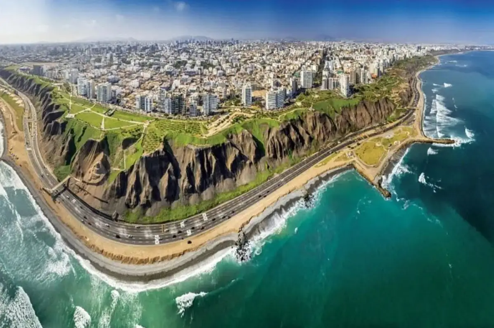
Lima
Mês Morado — Señor de los Milagros
Outubro inteiro é o "mês roxo" em Lima. As procissões principais são 18, 19 e 28 de outubro — depois que vocês já estarão em Cusco. Nos seus dias em Lima (2–4/10), haverá decorações roxas pelas ruas, altares em Las Nazarenas, missas especiais e turrón de Doña Pepa em toda esquina. O início do Mês Morado no seu estado mais autêntico.
01
Chegada · Descanso · Museo Larco · Barranco
Sexta, 02 de outubro · Chegada 6h55
Chegada cedo — check-in, descanso, café leve. À tarde, Museo Larco para começar a entender o Peru antes de ver qualquer ruína. À noite, Barranco sem pressa.
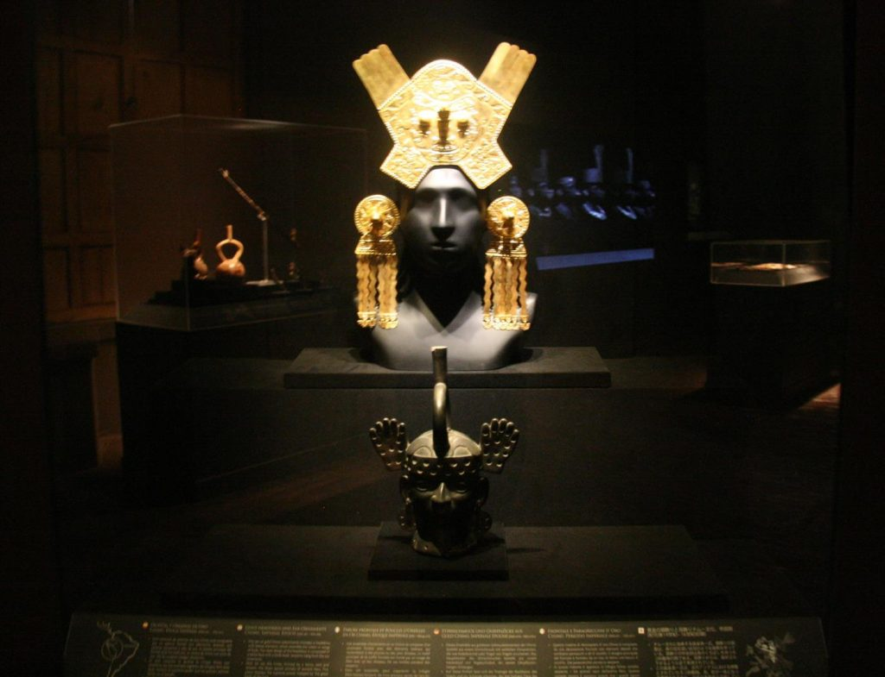
Museo Larco
Tarde · Museu Essencial
Museo Larco
O melhor ponto de partida para entender 5.000 anos de história pré-colombiana. Mansão vice-real do século XVIII, 45.000 peças, jardins premiados e galeria erótica. Fundamental antes das ruínas. Aberto todos os dias, 9h–19h.
museolarco.org ↗
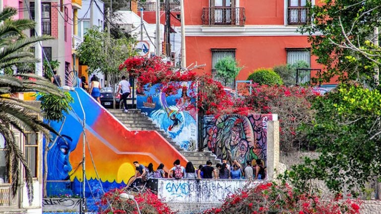
Barranco
Noite · Bairro
Barranco
O bairro mais bonito de Lima. Ruas coloniais, galerias de arte, bares com pisco sour e vista para o Pacífico. Bohêmio e adulto — ótimo para flanar e encontrar onde jantar.
TripAdvisor ↗
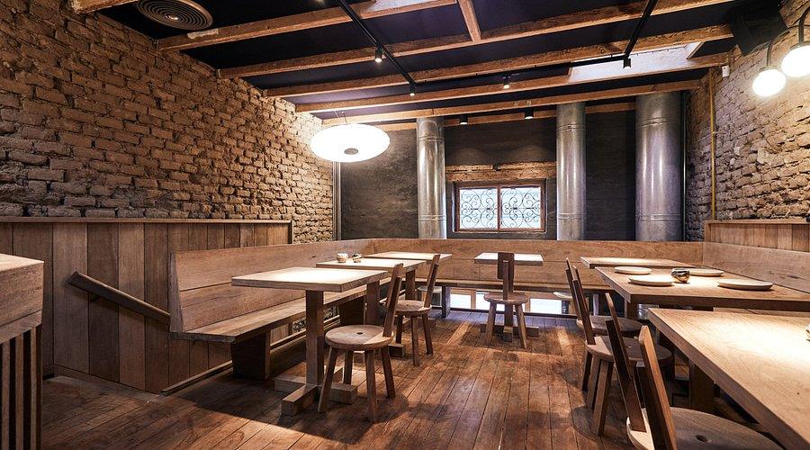
Gastronomia · Barranco
Jantar · Opção A
Mérito
Cozinha peruana de autoria — ingredientes amazônicos e andinos em preparações que surpreendem. Reconhecido internacionalmente, mas com alma. Reservar com antecedência.
TripAdvisor ↗
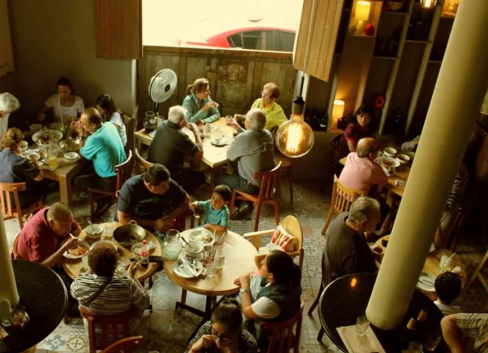
Gastronomia · Barranco
Jantar · Opção B
Isolina
Cozinha de fundo de quintal limeña — receitas de família, cortes nobres, ambiente caloroso. Um dos mais queridos de Barranco por quem mora em Lima.
TripAdvisor ↗
02
Centro Histórico · Las Nazarenas · Mês Morado
Sábado, 03 de outubro
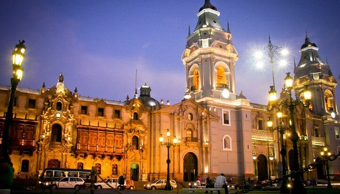
Plaza Mayor · Lima
Manhã · Centro Histórico
Plaza Mayor & Centro Histórico
Catedral, Palácio de Governo, arcadas coloniais. Chegar cedo antes do calor e do movimento. Patrimônio Mundial UNESCO. A partir daqui, caminhar até Las Nazarenas para sentir o início do Mês Morado.
TripAdvisor ↗
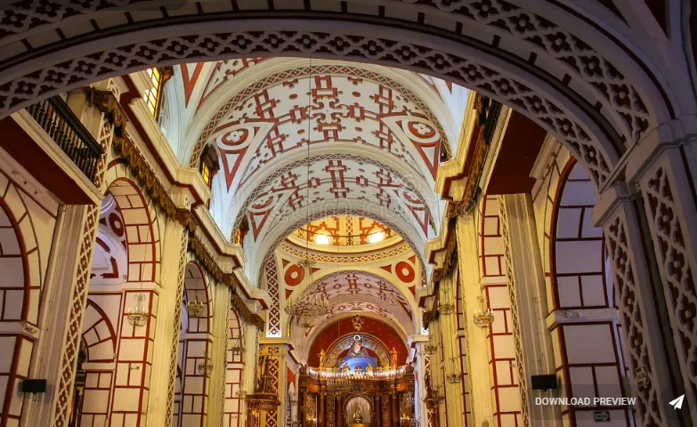
Convento de San Francisco
Manhã · Museu
Convento de San Francisco & Catacumbas
Barroco limeño do séc. XVII — biblioteca de 25.000 volumes, azulejos sevilhanos e catacumbas subterrâneas com ossários humanos. Uma das visitas mais impressionantes do Centro.
TripAdvisor ↗
Las Nazarenas — a 5 min do centro histórico. Mesmo sem procissão grande, o santuário estará decorado de roxo, com fiéis, velas e turrón à venda. É o ambiente do Mês Morado no estado mais autêntico.
03
MALI · MAC Lima · Surquillo · La Picantería
Domingo, 04 de outubro
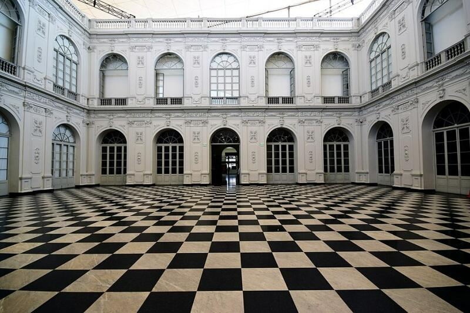
MALI · Palácio da Exposição
Manhã · Museu de Arte
MALI — Museo de Arte de Lima
3.000 anos de arte peruana em um só lugar — do pré-colombino ao contemporâneo. 17.000 obras. Palácio da Exposição de 1872. Ter–Dom, 10h–19h. Entrada gratuita quinta após 15h.
mali.pe ↗
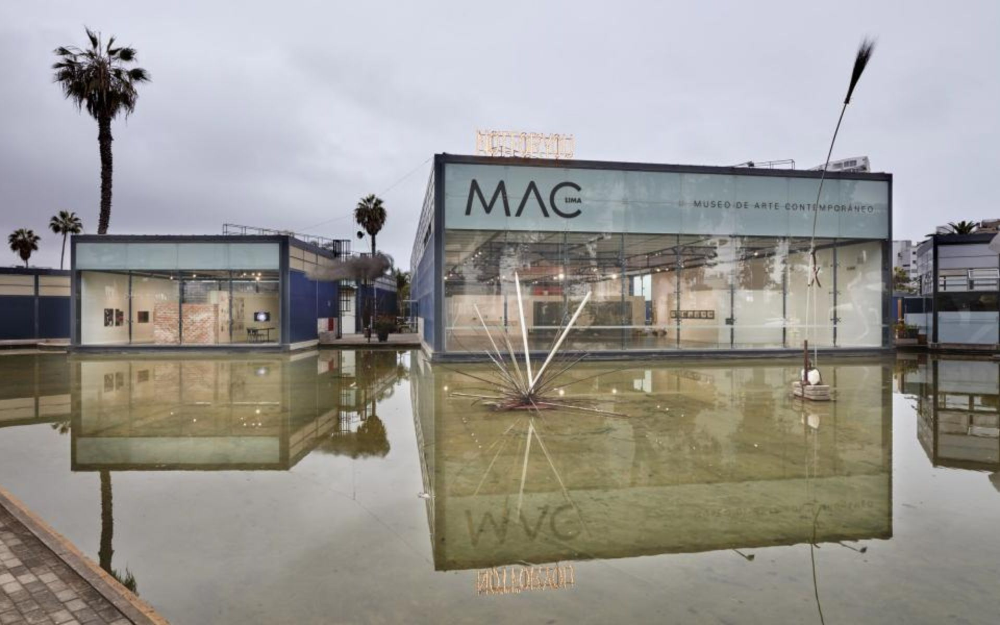
MAC Lima · Barranco
Tarde · Arte Contemporânea
MAC Lima — Museo de Arte Contemporáneo
Único museu de arte contemporânea de Lima — em Barranco, a 2 quarteirões do Hotel B. 14.000m², jardins, lagoa artificial. Obras de Miró, Dalí, Soto e artistas peruanos. Av. Grau 1511. Ter–Dom, 10h–18h.
TripAdvisor ↗
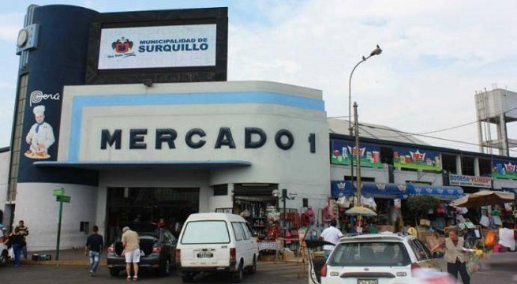
Mercado Nº1 · Surquillo
Tarde · Mercado Real
Surquillo — Mercado Nº1
O mercado onde os chefs de Lima fazem compras. Sem cenografia para turista — bancas de ceviche, frutas amazônicas, pimentas, especiarias. Autenticidade bruta.
TripAdvisor ↗

La Picantería · Surquillo
Jantar · Surquillo
La Picantería
O restaurante favorito dos chefs de Lima. Cozinha criolla e nikkei, frutos do mar impecáveis. Porções para compartilhar. Um dos mais importantes da cidade fora do circuito turístico convencional.
TripAdvisor ↗
Onde Dormir em Lima
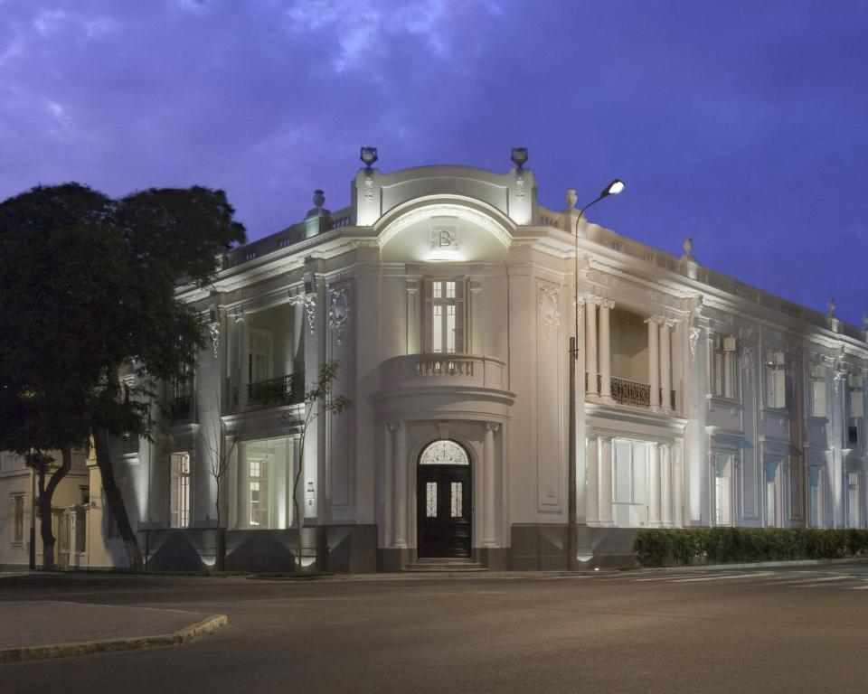
★ Relais & Châteaux · Barranco
Hotel B
Mansão Belle Époque de 1914, 20 quartos, 200 obras de arte, biblioteca-bar, terraço com vista para o Pacífico. O único Relais & Châteaux de Lima. Café da manhã incluso. Reservar com meses de antecedência.
relaischateaux.com ↗
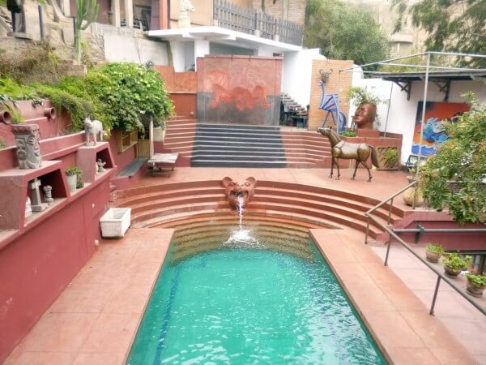
Boutique · Barranco
Second Home Peru
Casa colonial em Barranco, 9 quartos, jardim tropical, obras de arte e um ambiente intimista. Opção mais acessível que o Hotel B com charme real.
TripAdvisor ↗